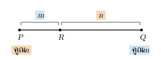

. จุดและพิกัดบนระนาบ
เรขาคณิตวิเคราะห์ใช้พิกัดและสมการ เปลี่ยนเรื่องตำแหน่ง ระยะ และสัมผัสเป็นการคำนวณ
จุด บอกตำแหน่งแนวนอน แนวตั้ง เครื่องหมายบอกจตุภาค
| จตุภาค | เครื่องหมายพิกัด |
|---|---|
| จตุภาคที่ | , |
| จตุภาคที่ | , |
| จตุภาคที่ | , |
| จตุภาคที่ | , |
จุดบนแกน มี ส่วนจุดบนแกน มี จุดบนแกนไม่อยู่ในจตุภาคใด
. ระยะระหว่างจุดและจุดแบ่งส่วนของเส้นตรง
ถ้ามีจุด และ ระยะระหว่างสองจุดคือ
สูตรมาจากพีทาโกรัส ผลต่างพิกัดเป็นระยะแนวนอน/แนวตั้ง
จุดกึ่งกลางของส่วนของเส้นตรง คือ
ถ้าจุด แบ่งส่วนของเส้นตรงภายใน โดย เมื่อ จะมีพิกัด
ระวัง: น้ำหนักที่คูณพิกัดของ เป็น และที่คูณพิกัดของ เป็น ไม่ใช่อ่านอัตราส่วนแล้วคูณตามลำดับทันที เช่น ถ้า จุด จะใกล้ มากกว่า จึงให้น้ำหนักพิกัดของ มากกว่า

. ความชันและสมการเส้นตรง
ความชันบอกว่าเมื่อเคลื่อนที่ไปทางขวา ค่า เปลี่ยนเร็วเพียงใด สำหรับเส้นตรงผ่านสองจุด เมื่อ จะมี
- : เส้นสูงขึ้นเมื่อมองจากซ้ายไปขวา
- : เส้นต่ำลงเมื่อมองจากซ้ายไปขวา
- : เส้นขนานแกน
- เส้นขนานแกน ไม่มีค่าความชัน เพราะผลต่างของ เป็นศูนย์
รูปสมการที่ใช้บ่อย ได้แก่
| ข้อมูล/รูปสมการ | สมการเส้นตรง |
|---|---|
| รู้ความชัน และจุด | |
| รู้ความชัน และจุดตัดแกน | |
| รูปทั่วไป | โดย และ ไม่เป็นศูนย์พร้อมกัน |
ถ้า ความชันของเส้นตรงรูปทั่วไปคือ ส่วนเส้นแนวตั้งเขียนเป็น
การหาจุดตัดแกน ให้แทน และการหาจุดตัดแกน ให้แทน
. เส้นขนาน เส้นตั้งฉาก และจุดตัด
สำหรับเส้นตรงที่มีค่าความชัน
- เส้นขนานกันมีความชันเท่ากัน
- เส้นตั้งฉากกันมี
เส้นแนวตั้งกับเส้นแนวนอนตั้งฉากกันเช่นกัน แต่ใช้สูตรผลคูณความชันไม่ได้ เพราะเส้นแนวตั้งไม่มีค่าความชัน
จุดตัด: แก้สองสมการพร้อมกัน เพราะจุดต้องอยู่ทั้งสองเส้น
ระวัง: ความชันเท่ากันยังต้องตรวจว่าเป็นคนละเส้นหรือเป็นเส้นเดียวกัน และจุดที่โจทย์บอกว่าอยู่บนเส้นใด ต้องแทนพิกัดแล้วทำให้สมการของเส้นนั้นเป็นจริง
. ระยะจากจุดถึงเส้นตรง
ระยะจากจุดถึงเส้นตรงหมายถึง ระยะสั้นที่สุด ซึ่งวัดตามแนวตั้งฉากกับเส้นตรง
ถ้าจุดคือ และเส้นตรงคือ ระยะคือ
จัดเส้นตรงให้ด้านหนึ่งเป็นศูนย์ก่อนแทนพิกัดในสูตรระยะ
ระวัง: ตัวเศษต้องมีค่าสัมบูรณ์ เพราะระยะไม่ติดลบ และตัวส่วนคือ ไม่ใช่
ถ้าเส้นขนานสองเส้นเขียนเป็น และ โดยมีสัมประสิทธิ์ และ ตรงกัน ระยะระหว่างเส้นคือ
หากสัมประสิทธิ์ยังไม่ตรงกัน ต้องจัดให้ตรงกันก่อนใช้สูตรนี้
. สมการวงกลม
วงกลมคือเซตของจุดที่อยู่ห่างจากจุดศูนย์กลางเป็นระยะคงที่ ระยะนั้นเรียกว่า รัศมี
ถ้าศูนย์กลางคือ และรัศมี สมการวงกลมคือ
เช่น มีศูนย์กลาง และรัศมี
ถ้าโจทย์ให้รูปทั่วไป
ศูนย์กลางคือ และมี หรือจัดกำลังสองสมบูรณ์เพื่อกลับไปอ่านรูปมาตรฐานก็ได้
ระวัง: ต้องได้ จึงเป็นวงกลม ถ้าได้ศูนย์จะเหลือเพียงจุดเดียว และถ้าติดลบจะไม่มีจุดในระนาบจำนวนจริงที่ทำให้สมการเป็นจริง
ถ้ารู้ศูนย์กลางและรู้ว่าวงกลมผ่านจุดใด ให้ใช้ระยะจากศูนย์กลางถึงจุดนั้นหารัศมี
. แนวข้อสอบที่เน้น: วงกลมกับเส้นสัมผัส
เส้นสัมผัสวงกลมมีจุดร่วมกับวงกลมเพียงจุดเดียว และตั้งฉากกับรัศมีที่ลากไปยังจุดสัมผัส
ตรวจสัมผัสโดยเทียบ ระยะศูนย์กลางถึงเส้นตรงกับรัศมี ไม่ต้องหาจุดตัดก่อน
ให้ เป็นระยะจากศูนย์กลางถึงเส้นตรง และ เป็นรัศมี
| ระยะ เทียบกับรัศมี | ความสัมพันธ์ |
|---|---|
| เส้นตรงตัดวงกลมสองจุด | |
| เส้นตรงสัมผัสวงกลม | |
| เส้นตรงไม่ตัดวงกลม |
ถ้าโจทย์บอกว่าเส้นตรงสัมผัสวงกลม เราจึงตั้งเงื่อนไข เพื่อหาค่าที่ยังไม่รู้ เช่น ตำแหน่งศูนย์กลางหรือรัศมี
วงกลมสัมผัสแกนพิกัด
สำหรับศูนย์กลาง ระยะถึงแกน คือ และระยะถึงแกน คือ จึงได้ว่า
| การสัมผัสแกน | เงื่อนไขรัศมี |
|---|---|
| สัมผัสแกน | |
| สัมผัสแกน | |
| สัมผัสทั้งสองแกน |
ถ้าโจทย์กำหนดจตุภาคของศูนย์กลาง ให้ใช้เครื่องหมายของ และ เลือกกรณีให้ตรง เช่น ศูนย์กลางในจตุภาคที่ ต้องมี และ ถ้าสัมผัสทั้งสองแกน ศูนย์กลางจึงเป็น
อ่านศูนย์กลาง/รัศมี → เลือกเงื่อนไขสัมผัส → แก้สมการ → คัดคำตอบตามเงื่อนไข
ระวัง: สมการระยะมีค่าสัมบูรณ์หรืออาจต้องยกกำลังสอง จึงควรตรวจคำตอบกลับในเงื่อนไขเดิม พร้อมตรวจว่า และศูนย์กลางอยู่ในจตุภาคที่กำหนดจริง